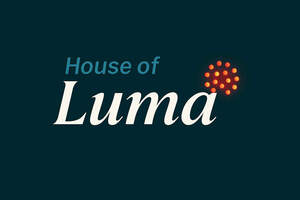

Trade Mark Journal No.2025/037 12 September 2025
UK00004245174 6 August 2025 (8,10,11,21)

- Class 8
- Kitchen knives; Thin-bladed kitchen knives; Kitchen knives (Non-electric -); Cutlery, kitchen knives, and cutting implements for kitchen use; Japanese chopping kitchen knives; Fish slicing kitchen knives; Knives; Chef knives; Table knives; Bread knives; Knives, forks and spoons; Table knives, forks and spoons for babies; Scissors for kitchen use; Table cutlery [knives, forks and spoons]; Knife handles; Butcher knives; Baby spoons, table forks and table knives; Carving knives (Hand operated -) for household use; Bread knives [hand operated]; Tableware [knives, forks and spoons].
- Class 10
- Infrared lamps for medical purposes; Infrared lamps for curative purposes; Low frequency electric therapy apparatus; Heat therapy apparatus.
- Class 11
- Infrared heating panels; Infrared lamp fixtures; Infrared lamps; Infrared illuminators; Infrared lamps, not for medical purposes; Infrared lighting fixtures; Smart light bulbs; Light fittings; Light filters [other than for medical or photographic use]; Light fixtures; Sun ray lamps; Ultra-violet ray lamps for cosmetic purposes; Self-luminous light sources; Fluorescent lamps; Ceiling light fittings.
- Class 21
- Kitchen utensils; Spatulas [kitchen utensils]; Household or kitchen utensils; Kitchen utensils of silicon; Cooking utensils, non-electric; Kitchen containers; Household utensils; Cookware [pots and pans]; Cooking pots and pans [non-electric]; Cooking pots; Pots; Cooking pans; Cooking pots [non-electric]; Cooking pans [non-electric]; Roasting pans; Frying pans; Pans (Frying -); Aluminium moulds [kitchen utensils]; Cooking pots, non-electric / Non-electric cooking pots; Cooking pot sets; Tenderizers [kitchen utensils]; Moulds [kitchen utensils]; Molds [kitchen utensils]; Mixing spoons [kitchen utensils]; Egg separators [kitchen utensils]; Kitchen graters; Dishes [household utensils]; Baking utensils; Kitchen jars; Kitchen sieves; Kitchen sponges; Kitchen utensils, not of precious metal; Serving scoops [household or kitchen utensil]; Sieves [household utensils]; Kitchen mitts; Ceramics for kitchen use; Kitchen moulds; Spoons (Basting -), for kitchen use; Cookware and tableware, except forks, knives and spoons; Defrosting trays for kitchen use; Tableware, cookware and containers; Utensils for household purposes; Kitchen mixers, non-electric; Skewers (cooking utensil); Glass pots; Portable pots and pans for camping; Ceramic mugs; Roaster pans; Coffee pots; Tea pots; Ceramic tableware; Hot pots, non-electric; Frying pans [non-electric]; Non-electric frying pans; Coffee pots [non-electric]; Butter pans; Serving pots; Muffin pans; Egg frying pans; Stir-fry pans; Frying pan lids; Coffee pots not of precious metal.
Mark Ivatt